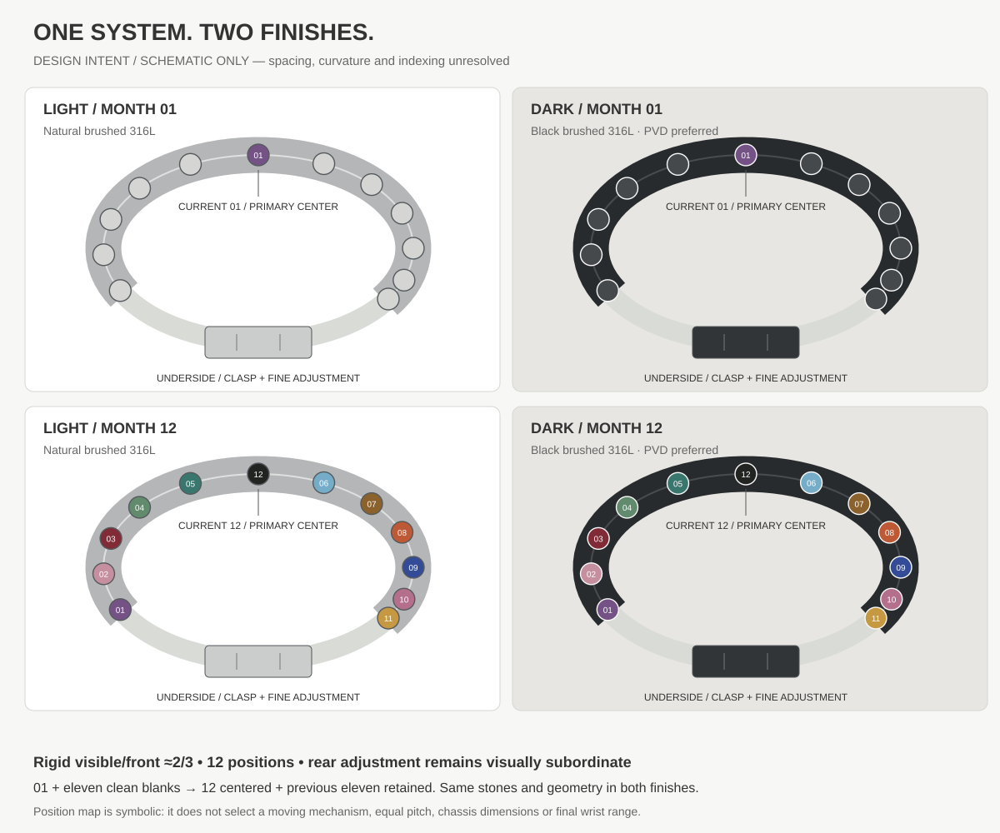
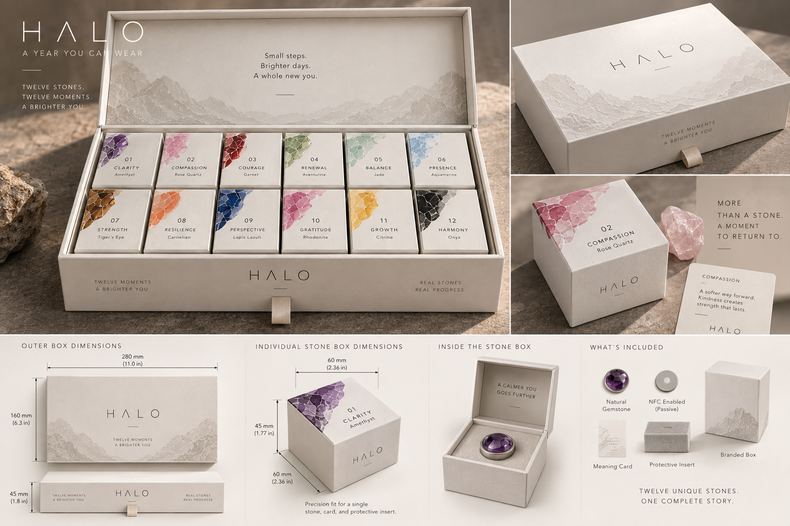
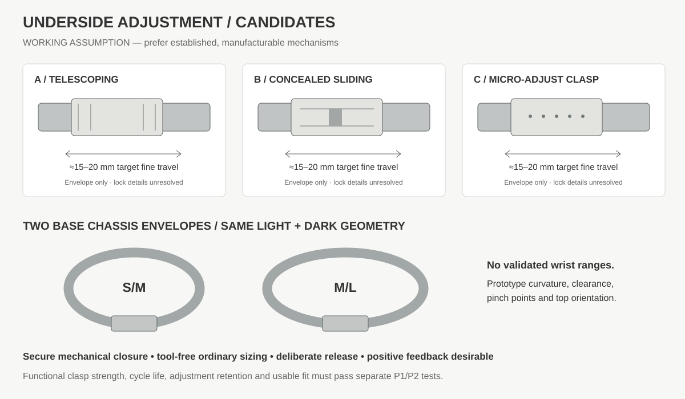

First Year Collection / H3 cost target
Halo — First Year Collection. One product, $189 retail, strictly below $200. $25 refundable founding reservation, credited toward the $189 purchase. This constraint governs every physical feature.
Includes the bracelet, 12 milestone stones, individual milestone presentation / packaging, Halo iPhone app, digital milestone collection and companion maturation throughout the year. Preserve the progressive bracelet and monthly reveal. Simplify invisible complexity.
| Evidence state | Meaning |
|---|---|
| DESIGN TARGET | An approved objective or planning allocation; not a quote, production cost or feasibility result. |
| WORKING ASSUMPTION | A provisional direction, quantity or estimate with an owner and revision. |
| REQUIRES PROTOTYPE | An unresolved physical question; define acceptance criteria before testing. |
| SUPPLIER-CONFIRMED | Dated written scope/cost/capability evidence; not automatically a Halo validation. |
| PHYSICALLY VALIDATED | Measured result against predeclared criteria for the named sample and revision. |
No supplier confirmation, manufacturing cost or physical validation is asserted here. H3 supersedes the mandatory all-stone NFC, dual-finish and twelve rigid-box assumptions in H2. Historical records remain available for audit, not approval.
One provisional finish for cost development. Fit evidence may justify necessary sizes; defer consumer finish selection. Keep common stone envelopes, secure retention and a calm, tactile bracelet. NFC A–D remains open, with D as the provisional costing baseline.
Earn → reveal the milestone → confirm in Halo → install → wear. A tap may enhance a future selected NFC option; it is not required for the ritual.

The old study explores dual finishes and center-current reseating. Preserve the progressive object; review any staging change against fit, emotional value, manual effort and the $189 constraint. This is not scaled CAD or proven hardware.
First Year Collection / H3 cost target
| Responsibility | Quote and evidence scope |
|---|---|
| Bracelet / hardware | Chassis, clasp, all retention interfaces, blanks, finish and engraving. Compare DFM processes and established clasp mechanisms without sacrificing material feel. |
| Twelve stones / inserts | Natural material identity and treatments, calibrated cut/height, seats/carriers, replacement stock. Count a carrier in exactly one cost group. |
| Individual presentation | One outer collection presentation, 12 individual reveals, cards and protected bracelet placement. Compare sleeves, small cartons and wrapped inserts against rigid boxes. |
| Assembly / QC | Stone setting, final assembly, optional NFC operations, kitting, inspection, rework and traceability. Time every manual step. |
| Optional NFC partner | Only for A–C: antenna/inlay, isolation, provisioning, correct-identity testing and integration. Request complete installed costs, not chip-only prices. |
| Inbound logistics | Written shipping terms, duties/import and inbound handling to fulfillment stock. Model outbound fulfillment separately. |
The $12 packaging allocation / $15 investigation ceiling covers the whole system. Protect material quality, tactile paper, stone protection and the monthly meaning card. Twelve rigid mini-boxes, magnets, deep relief, multiple drawers and two colorways are optional complexity.
Base logistics assumption: one complete first-year kit shipment. Twelve presentations do not imply twelve deliveries. Monthly shipping requires a separate full-year cost review and is not a current promise.

Six 60 mm boxes require 360 mm before allowances, exceeding the annotated 280 mm outer width. A 45 mm inner box cannot nest within 45 mm outer height. Correct the dimension chain before tooling; preserve this as atmosphere and material intent only.
First Year Collection / H3 cost target
Request comparable quotes at 25, 100, 500 and 1,000 saleable collections. Quantities are alternatives, not additive orders. No supplier has been contacted by this update.
Use the decision log for ownership and the next proof. Previous qualified suppliers or checked fields require H3 scope review. Do not infer that past samples can meet the new budget.
First Year Collection / H3 cost target
Provisional recommendation: D for the cost baseline and ritual prototype; investigate C if one bracelet tap adds meaningful value. A and B require evidence that per-stone identity is worth repeated cost and complexity. No option is physically validated.
| Criterion | A · all 12 stones | B · selected stones | C · one bracelet element | D · no NFC |
|---|---|---|---|---|
| BOM | 12 installed/tested units + integration | k units + integration; comparison k=3 only | 1 unit + integration | No physical NFC; app costs remain |
| Assembly | 12 placements, provisioning and tests | Fewer tests; two module recipes | One RF station and mapping | Stone setting and physical QC only |
| Reliability | Metal, neighboring reads and repeated failure opportunities | Same local RF issues on fewer stones | One RF location, single tap failure point | App eligibility/recovery reliability |
| Scan ergonomics | Small targets; wrong-neighbor risk | Selected-month tap may feel inconsistent | One known tap location; wrist access to test | Open Halo; no scan gesture |
| User value | Each stone can invoke its own story | Special-month activation | Ownership/onboarding or open collection | Full digital collection and companion growth |
| Fraud value | Static UID/URL is not proof of achievement | Same limits; untagged stones add no signal | Ownership association, not each milestone | Server eligibility; no physical authenticity signal |
| Yield | 12 integration steps can compound defects | Fewer RF steps; recipe/mapping errors | One RF step; total yield still unproven | No RF attrition; other defects remain |
Quote complete installed NFC cost: inlay, isolation, placement, provisioning, tests, rework and allocated engineering/tooling. A = 12t + F + R; B = kt + F + R; C = t + F + R. These variables are unknown, not supplier prices. Three tagged milestones in the calculator are a comparison assumption, not a release decision.
Measure the actual selected location loose, partly integrated, finally installed and on wrist, across declared phones, cases, poses, distances and exposure/cycle conditions. For multiple tags, verify intended identity among neighbors. Agree thresholds before logging a pass. D records RF as not applicable with an owned decision; it does not invent a passing RF result.
NXP antenna guidance explains metal effects and ferrite mitigation; it is not proof of Halo feasibility. ST passive-tag antenna guidance informs final-stack testing. NXP secure-tag capabilities do not establish Halo cost, yield or eligibility security.
First Year Collection / H3 cost target
Real materials, secure stone retention, comfortable fit and deliberate monthly handling carry the experience. Minimize invisible complexity before weakening those qualities.
| System | H3 investigation |
|---|---|
| Clasp / fit | Compare established closures and the minimum size range justified by wear studies. Prior S/M + M/L and 15–20 mm travel are provisional references, not validated fit. |
| Stone retention | Compare common positive-retention interfaces; measure pull/torque, cycles, accidental release, rattle and stone protection. Bayonet, threaded and detent candidates remain unselected. |
| Current stone staging | H2 center-current reseating is retained as a candidate. Quote its manual work and wear against a fixed progressive row; product review is required before changing the meaningful experience. No automatic carousel or extra socket is required. |
| Machining | Ask for formed/cast/standard-part alternatives and selective machining. Small undercuts, independent sockets and tight tolerances need process evidence and itemized cost. |
| Electronics | No battery, screen or powered lighting is required. Do not hollow stones for NFC until its option is selected and proves value and cost. |
| Assembly | Use common calibrated envelopes and inspection fixtures; measure setting, cure, assembly, kitting and rework time. Include all labor in the assembly/QC budget. |

Preserved for comparison. No mechanism, wrist range or multi-SKU launch is approved.
First Year Collection / H3 cost target
Retain historical dimensions; review against the $189 offer, chosen cost scenario and actual fit evidence. A checked field is not production approval. Optional NFC/PVD fields may be marked not applicable with a dated decision.
First Year Collection / H3 cost target
Predeclare sample count, acceptance criteria and owner. A checklist means evidence filed, not automatic approval.
First Year Collection / H3 cost target
Use for A–C only. Select the actual configuration and acceptance criteria. Old installed-suppression or readability results remain historical; no test establishes that NFC is required.
First Year Collection / H3 cost target
A blank cost is unknown. Record written evidence separately from targets. One offer does not mean every size or manufacturing process has the same cost.
For the baseline, quote one finish and only necessary fit sizes. Legacy Light/Dark fields preserve comparative scope; they do not commit the offer to variants. Include currency, quote validity, Incoterm, exclusions, duty basis and labor.
First Year Collection / H3 cost target
Aim for $70 landed product COGS; $85 maximum. The $80 working allocation below leaves $5 headroom. These are design targets, not fabricated supplier quotes.
| Cost group | Working allocation | Investigation ceiling |
|---|---|---|
| Bracelet / hardware | $28 | ≤ $30 |
| 12 stones / inserts, total | $22 | ≤ $20–30 |
| Packaging, whole collection | $12 | ≤ $15 |
| All assembly + QC / rework | $8 | ≤ $10 |
| Inbound freight / duties / logistics | $10 | ≤ $15 |
| Landed total | $80 | ≤ $85 overall |
$189 less $80 landed leaves $109 (57.7%) before selling and operating expenses. This is not profit: account for payment fees on reservation and balance, refunds/returns, outbound fulfillment, warranty, app/cloud/companion costs, support, acquisition and development/tooling. In tax-inclusive markets use net revenue after tax. The $25 reservation is credited, not extra revenue.
First Year Collection / H3 cost target
Agree measurable acceptance criteria and sample revision before testing. Do not infer safety, water resistance or manufacturing yield from a render.
First Year Collection / H3 cost target
[ARCHIVED H3 STUDY — DO NOT SEND AS A CURRENT SUPPLIER BRIEF] Subject: HALO — premium progressive bracelet for a $189 first-year collection The collection includes a bracelet, 12 real milestone stones and individual presentations. Retail is fixed at $189; landed whole-product COGS must be no more than $85. Bracelet/hardware working allocation is $28 (investigation ceiling $30). These are design targets, not expected quoted prices or proof of feasibility. Please compare established clasp/fit architectures and DFM routes that preserve real material feel, secure removable stones and a calm premium exterior. Quote one provisional natural-metal finish; distinguish optional finish premiums and genuinely necessary fit-size tooling. No second finish or two-size launch is committed. NFC is open: A all 12 stones, B selected stones, C one bracelet element, D none. D is the provisional cost baseline. Do not machine NFC cavities by default. Please identify cost/assembly consequences for any optional integration. Provide itemized quotes at 25/100/500/1,000 saleable kits: tooling/development, chassis, clasp, interfaces/blanks, carriers (if in your scope), machining, finishing, assembly, QC/rework and freight. Mark included operations to prevent double counting. State currency, Incoterm, date/validity, MOQ, samples, lead time, material, tolerance, process location, yield basis and ownership. H2 center-current reseating remains a candidate; compare its assembly/handling implications with a simpler progressive layout for product review. Do not silently remove differentiation or imply an automatic mechanism. Supply drawings, fit/retention/cycle sample evidence and limitations before production commitments. CAD/BOM, acceptance criteria, size scope and owner: [TBD before sending].
First Year Collection / H3 cost target
[ARCHIVED H3 STUDY — DO NOT SEND AS A CURRENT SUPPLIER BRIEF] Subject: HALO — optional NFC architecture comparison under a $189 retail constraint Please compare A: all 12 stone modules; B: selected milestones (quote per tag, example k=3 only); C: one bracelet element. D: no NFC is our provisional baseline. No option, chip or antenna geometry is selected. Quote complete installed cost: chip/inlay, antenna/isolation/ferrite, placement, encapsulation, provisioning/mapping, correct-identity testing, rework and engineering/tooling. Separate variable costs and nonrecurring costs at 25/100/500/1,000 saleable kits; identify integration ownership, MOQ, currency, freight and yield assumptions. Whole-kit landed COGS must fit ≤$85, including bracelet, 12 stones and presentation; there is no automatic NFC budget. Use the actual stone/carrier or bracelet environment and final metal geometry. Propose testable antenna locations; do not promise NFC-through-metal performance from a datasheet. Record phone/OS/case, reader mode, distance/pose, loose/partial/installed/on-wrist conditions, correct identity among neighbors and post-cycle/exposure repeatability. Explain ordinary UID/URL limitations and separately quote secure authentication, key provisioning/backend operations and replacement handling. Halo remains authoritative for milestone eligibility; scans do not prove achievement. Please provide drawings, physical samples, measured failures and limitations, not feasibility guarantees. CAD envelope and acceptance thresholds: [TBD].
First Year Collection / H3 cost target
Record original visual, mechanical and ritual decisions, contributor attribution and third-party references. This does not assert novelty, patentability, exclusivity or clearance.
Keep dated drawings, prototype evidence, process comparisons, material decisions and disclosure records. Document the tradeoff between premium feel and invisible complexity, including the NFC choice and current-stone staging. Retain prior evidence with its revision; use specialist review when evaluating protection.
First Year Collection / H3 cost target
First Year Collection / H3 cost target
Keep $189 fixed. Prove cost and the emotional experience together.
Record owner, alternatives, evidence and next proof. Prior records remain historical; a selected status does not supply evidence.
$189 retail, $25 refundable reservation and ≤$85 landed COGS now govern the product. NFC is optional; individual presentation does not mandate twelve rigid boxes; finishes are deferred; necessary size variants need fit evidence. Historical H2 drawings, tracker keys, quotes, costs and retail sensitivity entries are preserved. The archived source is manufacture/archive/h2-content.html; it is not deployed as active guidance.